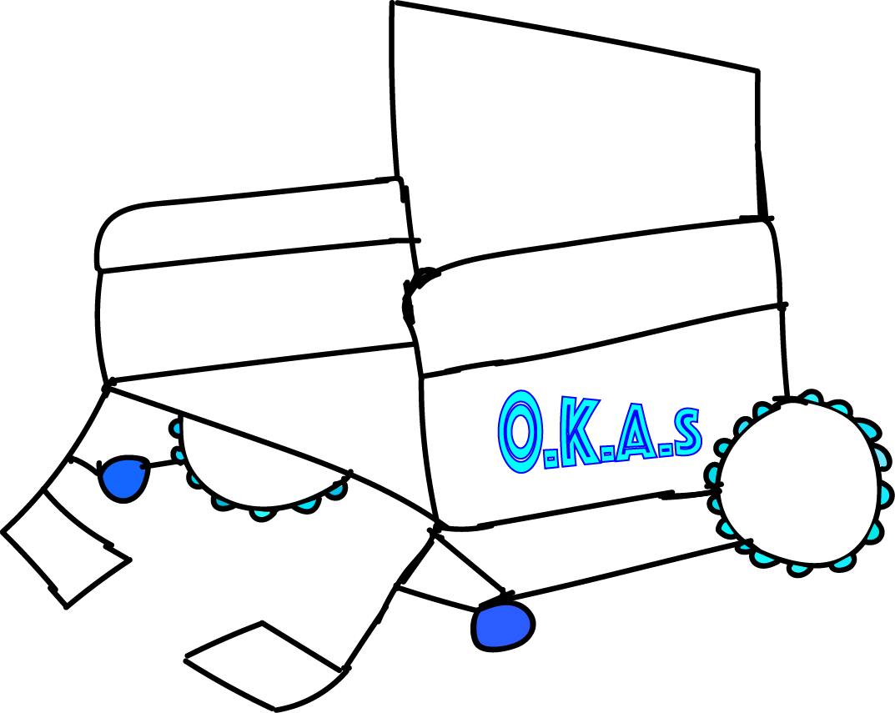

This is OKAS chair, a chair that is aim to change the way disability and elder move around. The OKAS chair is arm with a battery that can move the wheel, thanks to our partner at Giant Cycling for providing our battery. The battery life is very long it can last you 24hours of non-stop riding. It is also water proof so if you ever ride in rain your battery will be protect. The wheel is specially design for all type of road, it can survive gravel,

steep climb, urban road and stairs. Its arm with a sticky object called OKAStick, it can handle up to 20% gradient and all kind of stairs. Our chair also has the ability to eject parachute when falling, there is a special chip that can detect when the chair is falling and a parachute will be deploy. The parachute is for close parameter, if you are falling too close then there will be an airbag that deploy under the chair to save you. If its raining or its too bright it will automatically deploy a umbrella to provides you cover. You can have the ability to remove the umbrella whenever you want. We also think about you bottom part, we make the chair very comfy so that your bottom can get comfy and you won't get a sore ass when you sit for too long. We really think about our customer health and comfortable when we are designing this chair. Please buy our chair its on SALE NOW !!!